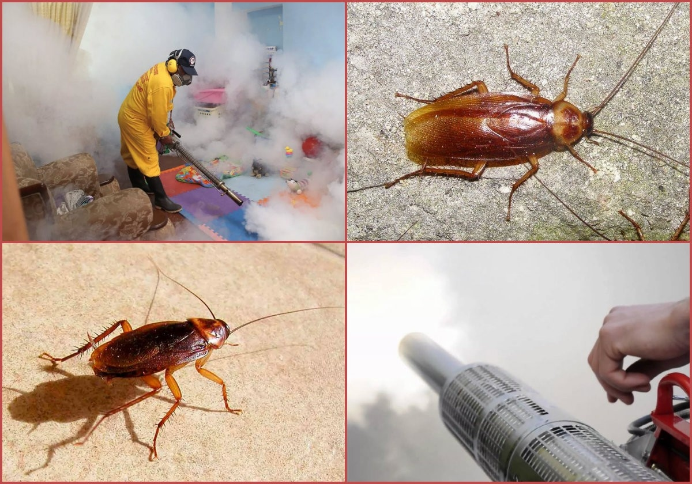

Причины появления насекомых
Проблема тараканов в общежитии — одна из самых распространённых среди студентов и жильцов коммунальных помещений. Такие условия благоприятны для насекомых: много людей, общие зоны, тепло и доступ к воде. Даже при чистоте в своей комнате, тараканы легко пробираются из других мест — коридоров, кухни или санузлов.
Насекомые питаются органикой, остатками еды, бумагой и даже мылом. Если не проводить санитарную обработку помещений и не использовать специальные средства, колония быстро разрастается. Особенно часто заражение происходит ночью — именно в это время тараканы выходят из укрытий в поисках пищи и воды. Днём вы можете не замечать их активности, но это не значит, что их нет. Постепенно популяция увеличивается, и тараканы начинают появляться даже днём — это тревожный сигнал.
Нужно учитывать, что в общежитиях тараканы не ограничиваются одной комнатой — они перемещаются между блоками, по вентиляции и щелям, заражая всё здание. Самостоятельно избавиться от них можно, но только при системном подходе и с применением эффективных средств борьбы.
Основные пути проникновения насекомых
Тараканы редко появляются «с улицы». Гораздо чаще они мигрируют из других комнат, подсобных помещений или даже из квартиры соседей. Особенно активно они используют вентиляцию, трещины, короба и щели под плинтусами. Это подтверждает необходимость герметизации всех входов до начала обработки.
Типовые места проникновения:
- Вентиляционные шахты и воздуховоды.
- Щели в полу, стенах, дверных проёмах.
- Коммуникационные отверстия под трубы и проводку.
- Задние панели бытовой техники — холодильников, плит, стиральных машин.
- Полости и ящики мебели.
- Подвалы, чердаки, мусоропроводы.
В общежитии обработка одного помещения редко даёт результат, если тараканы беспрепятственно заходят из других помещений. Важно перекрыть пути миграции, особенно в местах с повышенной влажностью и накоплением мусора. Без этого даже самая мощная дезинсекция будет временной.
Эффективные методы борьбы с тараканами
Для эффективной борьбы с тараканами в условиях общежития требуется комплексный подход. Применение одного средства, особенно без подготовки помещения, почти всегда не даёт устойчивого результата. Насекомые выживают, адаптируются к химикатам, перемещаются между помещениями и возвращаются через несколько дней. Поэтому важно соблюдать все этапы: санитарная подготовка, герметизация, обработка и профилактика.
В общежитии борьба с тараканами — это не только задача одного человека. Без согласованных действий всех жильцов результат будет временным. Особенно если в соседней комнате или квартире не проводится уборка, остаётся доступ к пище и воде. Насекомые легко возвращаются по вентиляции, полу или щелям в стенах.
Рекомендованные методы:
- Проведение санитарной подготовки с обязательной очисткой всех поверхностей.
- Герметизация всех щелей, вентиляции и проходов.
- Использование современных средств: гелей, порошков, ловушек.
- Повторная дезинсекция через 10–14 дней.
- Профилактика каждые 3–6 месяцев.
Если в общежитии проживает много людей и санитарные нормы часто нарушаются, необходимо подключать администрацию или обращаться в СЭС. В ряде случаев помогает централизованная обработка. Также стоит рассмотреть профессиональные способы борьбы: они дают лучший результат и снижают риск повторного заражения.
Сравнение эффективности различных средств
Правильно подобранные средства против тараканов — ключ к успешному избавлению от тараканов. В общежитии важно учитывать, что в одной комнате может жить несколько человек, поэтому средства должны быть безопасны, малотоксичны и при этом эффективно действовать в труднодоступных местах. Ниже — обзор популярных вариантов.
Гели
- Работают через контакт и поедание.
- Подходят для любых мест, безопасны при правильном применении.
- Эффект до 2 месяцев, особенно хорошо работают в сочетании с ловушками.
Аэрозоли
- Уничтожают взрослых особей моментально.
- Не воздействуют на яйца и личинок.
- Требуют проветривания, обработки в перчатках и респираторе.
Порошки, борная кислота, дуст
- Доступные и надёжные средства для борьбы.
- Эффективны в труднодоступных местах.
- Требуют времени, но дают хороший результат.
Ловушки и приманки
- Контролируют численность.
- Удобны для оценки эффективности обработки.
- Не решают проблему при массовом заражении.
Ультразвуковые отпугиватели
- Сомнительная эффективность в условиях общежитий.
- Только отпугивают вредителей.
- Могут не работать из-за фонового шума.
Оптимальный способ — комбинировать несколько средств: гель + порошок + ловушки. При этом нельзя забывать про уборку, устранение влаги и перекрытие всех возможных лазеек. Только в этом случае можно избавиться от вредителей надолго.
Пошаговая инструкция по уничтожению тараканов
Чтобы избавиться от тараканов в условиях общежития, необходимо действовать по строго определённой схеме. Одиночные меры — временное решение. Только системная дезинсекция позволяет избавиться от насекомых даже при повторном заносе.
Шаг 1. Санитарная подготовка
Перед началом обработки проведите глубокую уборку. Это важно: загрязнённые поверхности, остатки жира и пищи блокируют действие инсектицидов и уменьшают их эффективность.
- Удалите крошки, жир и остатки еды со всех поверхностей.
- Уберите посуду, закройте продукты в герметичную тару.
- Вытрите пол, протрите полки и шкафы.
- Устраните источник воды — высушите тряпки, уберите миски, устраните протечки.
- Проверьте укромные места: под кроватью, за шкафом, возле мусорного ведра.
Шаг 2. Герметизация помещения
На этом этапе важно перекрыть пути миграции насекомых. Даже после обработки тараканы могут вернуться из других мест.
- Заделайте щели в полу и стенах герметиком или пеной.
- Заклейте щели возле труб, проводов и розеток.
- Поставьте решётки на вентиляционные отверстия.
- Уплотните входную дверь и окна.
- Проверьте мебель, задвиньте её плотно к стене, протрите внутренности.
Шаг 3. Обработка помещения
Теперь можно приступать к использованию средств. Выбор зависит от условий и бюджета, но лучше использовать комбинированный подход.
- Нанесите гель под плинтусами, за плитой, холодильником, в шкафах.
- Рассыпьте борную кислоту в сухих местах: под кроватью, за мебелью.
- Распылите аэрозоль по инструкции — особенно в местах скопления насекомых.
- Установите ловушки — в виде клейких полосок или приманок.
- Повторите обработку через 10–14 дней.
Важно: дезинсекция эффективна только при соблюдении всех трёх шагов. Если тараканы появляются снова, проверьте, не упущены ли какие-либо участки или щели. При необходимости подключите соседей или управляющую компанию — тараканы часто мигрируют от других жильцов.
Частые ошибки при самостоятельной обработке
Многие жильцы общежитий совершают одни и те же ошибки при попытке избавиться от тараканов. В результате обработка не приносит должного эффекта, насекомые возвращаются, а заражение усиливается. Особенно часто проблема возникает при нарушении последовательности работ и игнорировании подготовки.
Наиболее распространённые ошибки:
- Использование только аэрозоля без геля или порошка — не влияет на яйца и личинок.
- Отсутствие предварительной уборки — грязные поверхности блокируют действие средств.
- Пропуск герметизации — тараканы возвращаются из других комнат через вентиляцию.
- Частичная обработка — игнорируются скрытые места: за плитой, под шкафом, в коробах.
- Немедленная уборка геля — средство не успевает подействовать.
- Отказ от повторной обработки — личинки выживают и формируют новую колонию.
- Применение устаревших или слабых препаратов, к которым у насекомых выработалась устойчивость.
Чтобы избежать этих ошибок, важно следовать пошаговой инструкции, использовать современные средства и повторять обработку при необходимости.
Почему нужна профессиональная дезинсекция
Профессиональная дезинсекция — оптимальное решение при массовом заражении. Особенно это важно в общежитиях, где тараканы заселяют несколько комнат, общие зоны и технические помещения. Домашние методы могут не справиться с устойчивой популяцией, особенно если колония давно сформирована.
Преимущества обращения к специалистам:
- Применение сертифицированных препаратов, эффективных против всех стадий развития насекомых.
- Обработка всех рисковых участков: мебели, техники, вентиляции, труднодоступных мест.
- Использование методов туманообразования и барьерной защиты.
- Безопасность для человека, животных и окружающей среды при соблюдении инструкции.
- Повторная бесплатная дезинсекция при сохранении проблемы в течение гарантийного срока.
Когда обязательно обращаться в СЭС или специализированную службу:
- Если тараканы появляются снова через несколько дней после самостоятельной обработки.
- При наличии яиц, гнёзд, массовой дневной активности насекомых.
- Если заражены не только комнаты, но и кухня, санузел, подсобные помещения.
- Если вы проживаете в квартире с детьми или аллергиками — требуется безопасная обработка.
- При необходимости официальных документов: акта обработки, договора, гарантии.
Профессиональные службы обычно предоставляют отчётные документы для администрации общежития, а также рекомендации по профилактике и уходу после дезинсекции.
Заключение
Появление тараканов в общежитии — не просто бытовая неприятность. Это сигнал о нарушении санитарных условий и потенциальная угроза здоровью человека. Насекомые разносят бактерии, провоцируют аллергию, заражают продукты и поверхности. При этом избавиться от тараканов непросто: они устойчивы к температуре, скрываются в труднодоступных местах и быстро размножаются.
Чтобы решить проблему:
- Не экономьте на средствах — используйте современные гели, порошки, аэрозоли в комплексе.
- Уделяйте внимание подготовке: уборка, герметизация, устранение воды, недоступность еды.
- Не забывайте о профилактике — повторная дезинсекция через 10–14 дней обязательна.
- При сильном заражении сразу обращайтесь в СЭС или дезслужбу.
Советы:
- Поддерживайте чистоту — тараканы заводятся там, где есть жир, влага и остатки еды.
- Не храните воду открыто: мокрые тряпки, чашки, протечки — всё это способствует заражению.
- Используйте дератизационные и дезинсекционные методы в комплексе.
- Проверяйте труднодоступные места: под техникой, в углах, в вентиляции.
- Изучайте разные способы борьбы и применяйте их в виде схемы, а не по отдельности.
Если тараканы продолжают появляться несмотря на самостоятельные меры, не откладывайте вызов специалистов. Профессиональная обработка стоит дешевле, чем постоянные покупки бытовых средств, и даёт более стабильный результат.
Системный подход, коллективные меры и правильное применение средств — единственный надёжный способ избавиться от тараканов в комнате общежития или во всём блоке. Не допускайте повторных ошибок, соблюдайте санитарные нормы и регулярно проводите профилактику. Это защитит не только ваше помещение, но и здоровье всех жильцов.